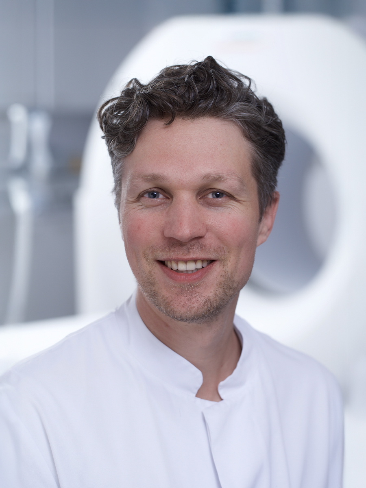

Prof. Daniel Truhn
Senior Physician, Laboratory for Artificial Intelligence, Diagnostic and Interventional Radiology
RWTH Aachen, Germany
Artificial Intelligence (AI) is rapidly transforming both our daily lives and professional practices and is expected to profoundly reshape how cancer care is delivered in the coming years.
Organised by the Department of Digital Medicine at the University of Bern, this half-day symposium will bring together clinicians, researchers, and technology experts to explore how AI is being integrated into oncology today — and what the next decade may hold.
Through practical insights and interdisciplinary discussion, we aim to examine both the opportunities and the open questions surrounding AI in cancer care. Join us as we reflect on how innovation and clinical expertise can shape the future of patient care.
Leading experts in oncology, artificial intelligence and digital medicine exploring how AI is transforming cancer diagnosis, treatment and patient care.
Senior Physician, Laboratory for Artificial Intelligence, Diagnostic and Interventional Radiology
RWTH Aachen, Germany
Head of Research, Center for AI-Based Radiation Therapy
Inselspital | University of Bern
Group Head, ARTORG Center for Biomedical Engineering Research
University of Bern
Patient Expert
Bern University of Applied Sciences, SPO, Swiss PPIE Network
Chief Medical Physicist, Artificial Intelligence and Translational Theranostics
Inselspital | University of Bern
Senior Physician, Clinical Pathology, IGMP
University of Bern
Chief Medical Information Officer
Inselspital

Chief Physician, Visceral Surgery and Medicine
Inselspital | University of Bern

Senior Physician, Diagnostic, Interventional and Pediatric Radiology
Inselspital, Bern

Group Head, ARTORG Center for Biomedical Engineering Research
University of Bern

Senior Physician, Medical Oncology and Hematology
USZ Zurich
Thank you to the organisations supporting the 2026 AI in Cancer Care Symposium.
Sponsors to be announced soon.
AI in Cancer Care 2026 is packed with insightful sessions and special moments.
Bringing together leading AI and oncology researchers to discuss cutting-edge applications and translational impact.

Clinicians, data scientists and innovators debate the real-world implementation of AI in cancer care.

An opportunity to connect across disciplines and build new collaborations in digital medicine.
Explore curated demos and research showcases highlighting AI tools, clinical use cases and emerging innovations shaping cancer care.